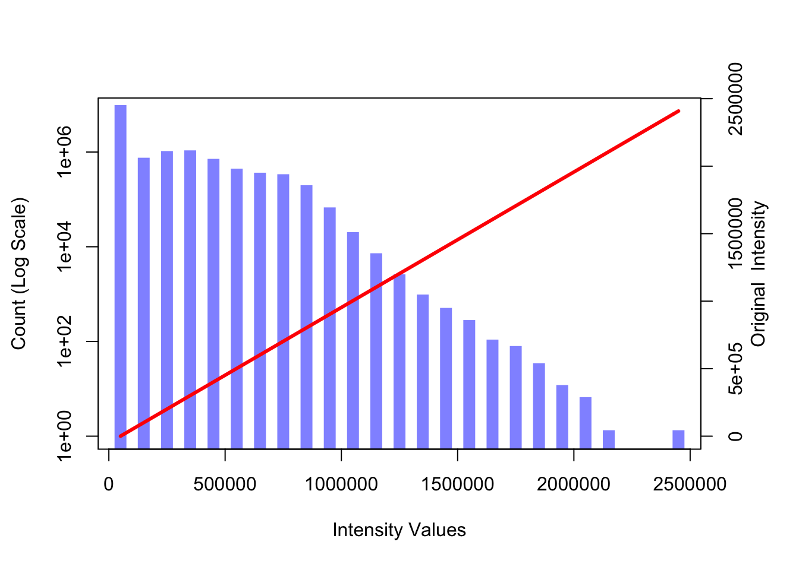
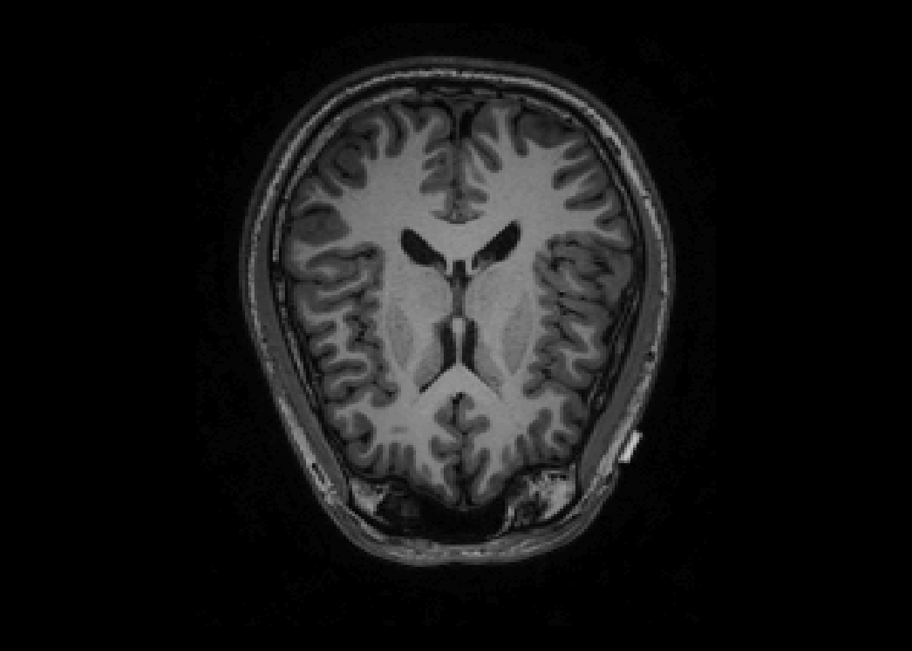
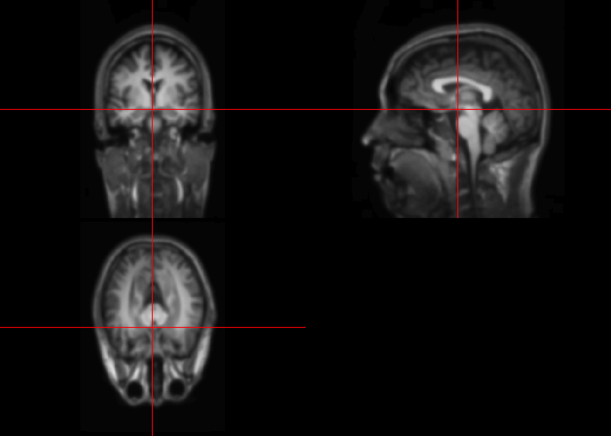

Lecture 5 Transformation
fname = "SUBJ0001-01-MPRAGE.nii.gz"
fpath = file.path("Neurohacking_data/kirby21", fname)
library(oro.nifti)## oro.nifti 0.10.1im_hist = hist(T1, plot=FALSE)
par(mar = c(5, 4, 4, 4) + 0.3)
col1 = rgb(0,0,1,1/2)
plot(im_hist$mids, im_hist$count, log="y", type="h", lwd=10, lend=2, col=col1, xlab="Intensity Values", ylab="Count (Log Scale)")## Warning in xy.coords(x, y, xlabel, ylabel, log): 2 y values <= 0 omitted from
## logarithmic plotpar(new = TRUE)
curve(x*1, axes = FALSE, xlab="", ylab="",
col=2, lwd=3)
axis(side=4, at =pretty(range(im_hist$mids))/max(T1), labels=pretty(range(im_hist$mids)))
mtext("Original Intensity", side=4, line=2)
#Define a linear spline function
lin.sp = function(x, knots, slope){
knots = c(min(x), knots, max(x))
slopeS = slope[1]
for(j in 2:length(slope)){
slopeS = c(slopeS, slope[j]-sum(slopeS))
}
rvals = numeric(length(x))
for(i in 2:length(knots)){
rvals = ifelse(x >= knots[i-1], slopeS[i-1]*(x-knots[i-1])+rvals, rvals)
}
return(rvals)
}
#Define a linear spline
knot.vals = c(.3,.6)
slp.vals = c(1, .5, .25)
#Repeat the histgram
par(mar = c(5, 4, 4, 4) + 0.3)
plot(im_hist$mids, im_hist$count, log="y", type="h", lwd=10, lend=2, col=col1, xlab="Intensity Values", ylab="Count (Log Scale)")## Warning in xy.coords(x, y, xlabel, ylabel, log): 2 y values <= 0 omitted from
## logarithmic plot#Change curve() to graph linear pline
par(new = TRUE)
curve(lin.sp(x, knot.vals, slp.vals), axes=FALSE, xlab="", ylab="", col=2, lwd=3)
axis(side=4, at =pretty(range(im_hist$mids))/max(T1), labels=pretty(range(im_hist$mids)))
mtext("Transformed Intensity", side=4, line=2)
You can define different types of transfer functions.
5.1 Visualizing after transformations
knot.vals = c(.3,.6)
slp.vals = c(1, .5, .25)
trans_T1 = lin.sp(T1, knot.vals*max(T1), slp.vals)
par(mfrow = c(1, 2))
image(T1, z=150, plot.type='single', main="Original Image")

Notes
-Knots rescaled to the cale of intensities knots.vals*max(T1)
-The transfer function can be any functions
-Used for better:
-visualization
-prediction
-input into standard software
5.2 Smoothing
## Loading required package: R.matlab## R.matlab v3.6.2 (2018-09-26) successfully loaded. See ?R.matlab for help.##
## Attaching package: 'R.matlab'## The following objects are masked from 'package:base':
##
## getOption, isOpen## Loading required package: fastICA## Loading required package: tcltk## Loading required package: tkrplotsmooth.T1 = GaussSmoothArray(T1,
voxdim = c(1,1,1),
ksize=11,
sigma=diag(3,3),
mask = NULL,
var.norm = FALSE
)
orthographic(smooth.T1)